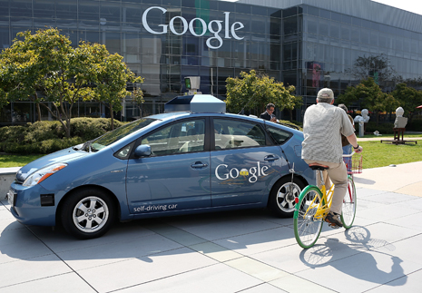

-
Selection No. 5
by Analisa Teachworth December 18, 2012
still from Breaking Dawn. image by Keaton Ventura.
1. Nothing makes my blood pump faster than the Twilight series. I have been fantasizing about Kristen Stewart and Robert Pattinson sucking on each other’s blood since 2008 when the first twilight film was released.
Impatiently awaiting Breaking Dawn, released November 16, 2012, I had no idea I would experience some of the most visually stunning credits I have ever seen.
The motion graphics were comprised of aerial landscapes — sweeping forests, fractal geometry unconvinced by the human the eye. Billowing snowflakes falling in holy synchronicity under magnification left an unforgettable imprint in my mind. The color palette of images ranges from deep red fog, lush burgundy, and vivid sea greens. The names of the cast members appeared in smoke, set in heavily kerned sans serif white dissipating into blood red. I could not imagine a more dynamic introduction to the film, nor have after effects ever been quite so effective.
2. As a person who identifies as LGBTQ, I was extremely proud and affected by friend and artist iO Tillett Wright who recently gave a TED talk generally about her work as an photographer and specifically about a project on modern civil right issues. The artwork I create often addresses the subject of civil rights and importance of equality for same sex relationships. I could go deep into my own thoughts on how to support change, but iO says much of it in her discussion for TEDxWomen.
3. Here is a selection of my Top 3 Youtube videos that I watched this week, old and new –

Tufte’s Envisioning Information. courtesy of the author.
4. There is something that a lot of people in my generation are not looking at more — they are called Books. I have always had affinity for the book, as they are a source of power and thoughtful information. In college I use to make a lot of books by hand, and I still tend to see in narrative structures.
The other day I came across a book located in one of my favorite stores in Brooklyn, Open Air Modern called Envisioning Information by Edward Tufte.
The way we perceive space is a learned and developed construct. Hardly ever am I changed by the presentations of information on the Internet. If anything, much of the material out on the net comes and goes without consideration. I am consistently trying to fold common structure and presentation of ideas that are expressed via the World Wide Web. In today’s world the Internet is how we gain most of our information, but it does not mean that we have to leave great books like Envisioning Information in the dust.
still from Lana del Ray’s Ride.
5.
“It takes getting everything you ever wanted, and then loosing it, to know what true freedom is.”
Lana Del Rey
What’s up Lana Del Rey? Is it her glazed over gaze, her French kitten mohair H&M ad campaign? What draws me in is the very same thing that draws mainstream culture away from pop stars of this sort. I’m interested in the the poetics of popular culture. Lana holds an unacknowledged mystery, living in her own personal tragedy that she transforms effortlessly into a fantasy.
Christopher Glazek’s recent article for Artforum’s end of year issue — The Year in Pop — hit the nail on Del Rey’s coffin. We have accepted her as one of us, for better or for worse.
image courtesy of site of Kristin Fontana.
6. I read quite a bit about astrology, mostly in books. The information that exists on the internet is pretty diluted. There is one particular astrologer who I always go back on the net, as she gives fairly accurate and positive perspective week by week. I have been visiting the site of Kristin Fontana, Evolutionary Astrologer for almost three years now and gained a lot of knowledge about the way I consider the stars and what they can bring to a life. I hope someday to meet with this source in person.
A Google self-driving car at the Google headquarters. Photo by Justin Sullivan, courtesy of The New Yorker.
7. When I was young, I watched a lot of cartoons. The The Jetsons were a personal favorite of mine because I have always had an inherent love for technology and pondering the future. The intro to the cartoon, if you don’t remember, depicted the Jetson family flying around in an art deco hover like craft, where each family member would be dropped from the bottom of vehicle.
The Jetsons cartoon affected a lot of people’s idea of the future and human transportation. Although we not quite there yet, some changes in automation are allowing us to live more like Jetsons. For the past four years Google has been developing a car that drives itself. Maybe we will not even be using the term drive next time around.
Read more about Google self-driving car in this New Yorker article, and watch more here.
a porcelain piece in WEAM’s collection. image by Analisa Teachworth.
8. I have been attending Miami Art Basel now for the past five years. I walked by the World Erotic Art Museum a handful of times but never ventured in. In this year 2012, I decided to pay a visit to the largest collection of erotic art in the world, with over 4000 erotic based works from around the globe.
I was not disappointed.
The museum, located in the heart of South Beach, was a treasure chest, containing illustrations of familiar Disney cartoons in positions I had never imagined. I found tiny porcelain sculptures of Leda and the Swan — one of my favorite stories in Greek mythology in which Zeus comes to Leda in the form of a swan and makes love to her. Antique 18th century marble hand carved centaurs along side fiberglass sculptures of two women riding a double-edged dildo was enitled Double Trouble.
All the erotic work lead to me the familiar question an artist asks — what is new? The conclusion was the same — nothing. However, I left WEAM with the realization that the modern artist has a responsibility to continue creating erotic works of art.
still from video of Baumgartner’s jump. courtesy of Red Bull.
9. I spent one morning on a live stream from the internet watching a man jump from the Stratosphere of earth. The project, Red Bull Stratos, was an attempt to break a record, funded by Red Bull. The workings of this jump are incredibly complicated. I took a lot of screen grabs and also made a youtube video of the space jump:
Here is Red Bull’s statement on the Jump:
The purpose of the Red Bull Stratos mission is to transcend human limits. Supported by a team of experts Felix Baumgartner ascended to 128,100 feet in a stratospheric balloon and made a freefall jump rushing toward earth at supersonic speeds before parachuting to the ground. His successful feat on Oct. 14, 2012 holds the potential to provide valuable medical and scientific research data for future pioneers +
my nails by MP. image courtesy of the artist.
10. Last but not least, I want to write about my friend Madeline Pool. Based in Los Angeles, she is nail artist with a very cool style. She just did my nails and she has done major celebrity nails, like Ke$ha. Madeline goes hard in the nail paint and brings the best nail game I have ever seen. Check her work! @mpnails!